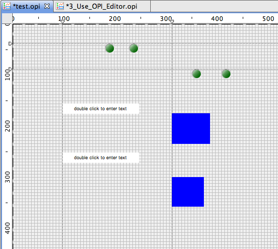

The OPI Editor is a WYSIWYG (What You See Is What You Get) editor. It has most of the modern editing features
which can facilitate your the OPI editing:
The OPI Editor is a WYSIWYG (What You See Is What You Get) editor. It has most of the modern editing features
which can facilitate your the OPI editing:
When you double click an .opi file from the Navigator, the file will be opened by OPI Editor by default. If it's not, you can still open an .opi file with OPI Editor by right clicking the file and choose Open With->OPI Editor.
The OPI Editor is a WYSIWYG (What You See Is What You Get) editor. It has most of the modern editing features
which can facilitate your the OPI editing:
The Widgets Palette hosts all the widget entries. Click the widget on the palette and then click on the display or drag a rectangle will create a widget on the display.
The Palette can be hidden or drag to another side of the display.
Simply click on the widget will select the widget. Press Ctrl or Shift to select more widgets.
Simply drag the widgets to move them.
Simply drag the border of the selected widgets to resize them. Press [.] dot to enable the movement of widgets with the arrow keys.
Press Ctrl and drag the widgets to clone them.
The othe functions such as copy, paste, delete, undo/redo can be easily accessed from the toolbar or context menu.
 Guide is very useful when you are arranging or moving widgets.
 on the toolbar to show the ruler in editor.
on the toolbar to show the ruler in editor.